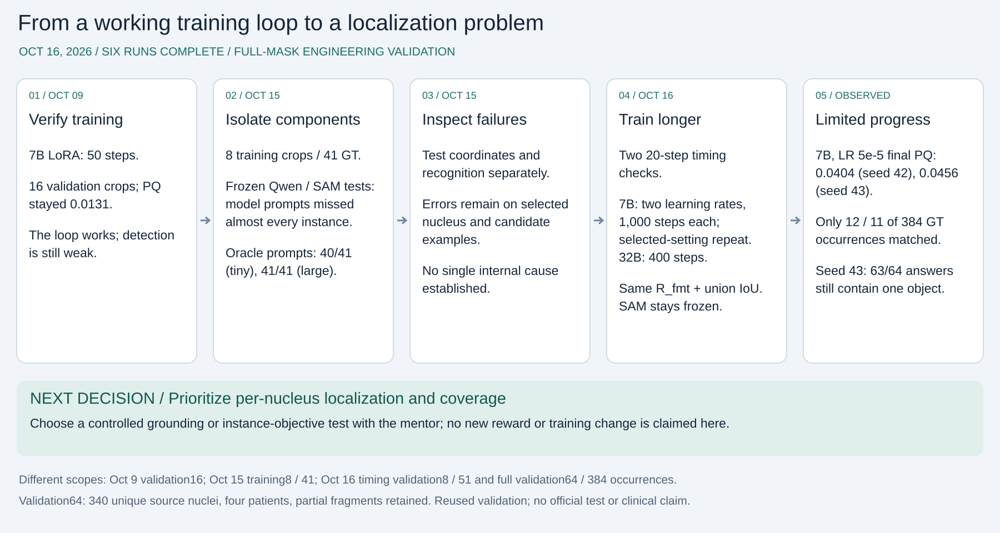

October 16, 2026. The suite is RUNNING. Both 20-step timing checks are complete; longer-run outcomes remain PENDING.

PNG for slides · Editable vector SVG · Plan and linked evidence
| Model | PQ before → after | TP / 51 nuclei | Training / total seconds | Peak allocated GiB |
|---|---|---|---|---|
| 7B, 20 steps | 0.01584 → 0.01098 | 1 → 1 | 51.26 / 94.21 | 16.44 |
| 32B, 20 steps | 0 → 0.01260 | 0 → 1 | 152.65 / 270.72 | 63.67 |
These checks confirm that training runs and provide resource measurements. One extra match on eight selected crops does not establish reliable segmentation or a model-size advantage. Benchmark8 stays separate from validation64.
The 7B learning-rate 1e-5 run is running, targeting 1,000 steps. A fresh 7B run at 5e-5 is planned for the same 1,000 steps. A fresh 32B run at 1e-5 is planned for 400 steps within two hours. Keep LoRA rank 8, seed 42, R_fmt + foreground IoU and frozen SAM2.1 tiny; an optional seed-43 repeat of the selected 7B setting depends on remaining time.
Use the official-30 source cohort: 256 training and 64 validation crops from 19/4 disjoint patients. Compare completed budgets explicitly. Requested steps are targets, not completed results.